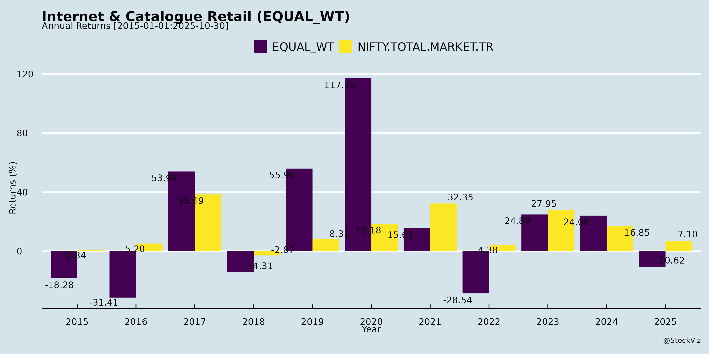
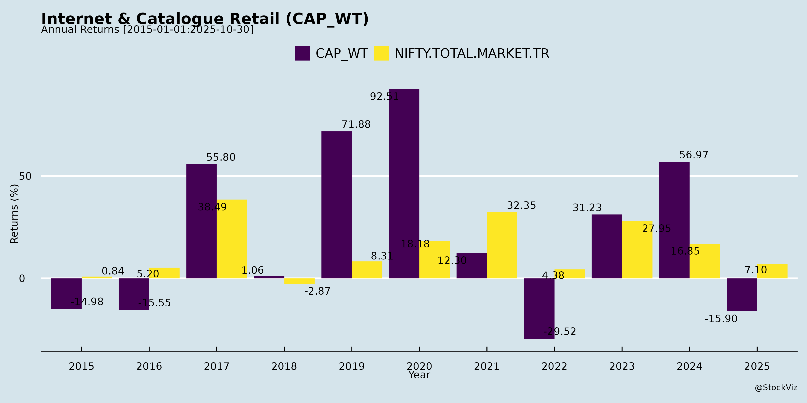
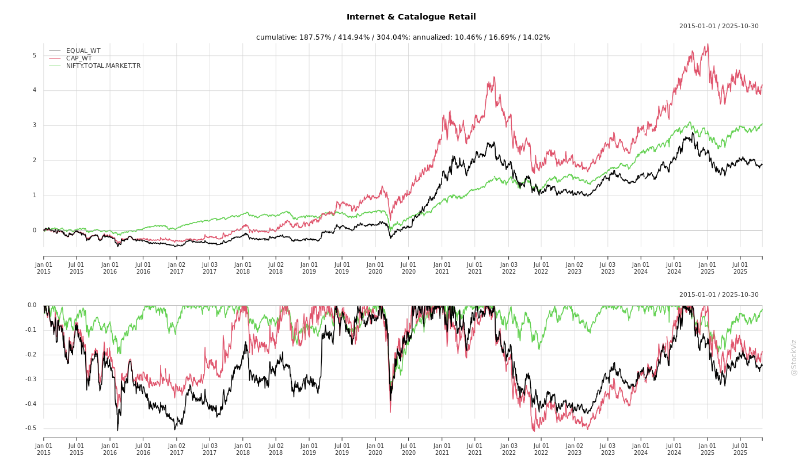
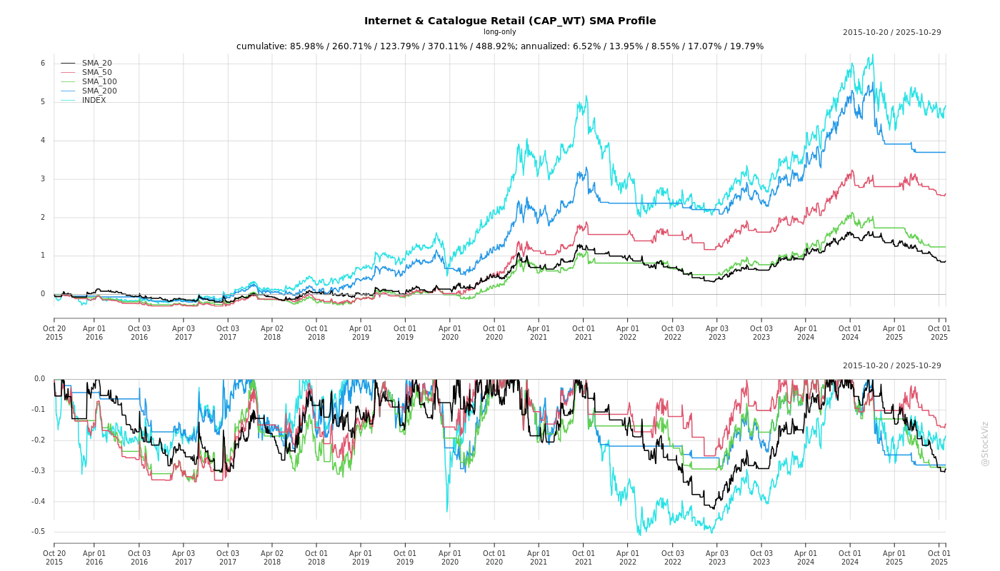
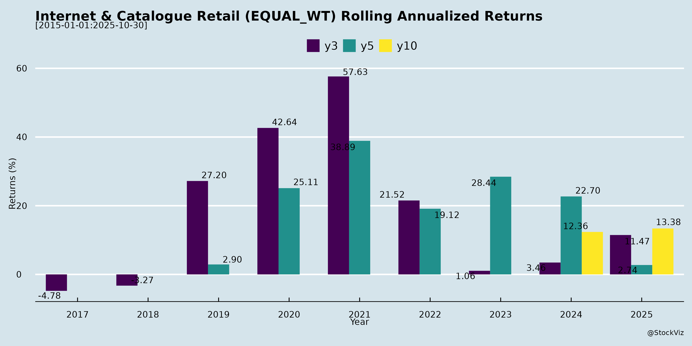
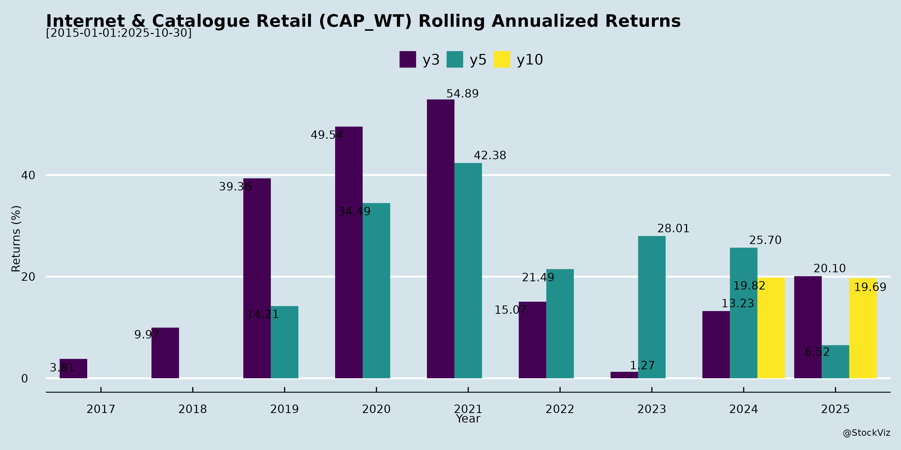

Internet & Catalogue Retail
Industry Metrics
February 20, 2026
Annual Returns


Cumulative Returns and Drawdowns

SMA Scenarios


Current Distance from SMA
Rolling Returns


Market Cap
EBIT (% of Industry Total)
Revenue (% of Industry Total)
AI Summaries
Analyst
asof: 2025-12-03
Summary Analysis: Indian Internet & Catalogue Retail Sector
Using the provided documents (disclosures from Info Edge/Naukri, IndianMART, Just Dial, Crizac, and Matrimony.com), the sector (encompassing online classifieds for jobs, matrimony, local search/services, B2B marketplaces, and edtech elements) shows resilient operations amid macro challenges. Key insights from Just Dial’s Q4 FY25 earnings transcript and Matrimony.com’s Q2 FY26 call dominate, supplemented by investor meet schedules indicating sustained institutional interest (e.g., Putnam, Wellington for Info Edge; Brescon for IndianMART). Financials reflect efficiency but muted growth, with tailwinds from traffic/digital shifts offsetting headwinds like competition.
Tailwinds
- Traffic & User Engagement Growth: Just Dial reported 11.8% YoY unique visitors (191M quarterly), with mobile traffic (87% share) up 15%; listings up 11.9% to 48.8M. B2B traffic share rising to ~20%. Matrimony leveraging AI chatbots and integrations for better CX.
- Operational Efficiency & Margins: Just Dial’s EBITDA margin at 29.4% FY25 (up from 25% target), with 72% YoY operating PBT growth; collections up 11.3% in seasonally strong Q4. Matrimony’s ex-marketing margin at 57.4%, cash flow from ops steady (INR14.6 Cr Q2).
- Cash Rich Balance Sheets: Just Dial at INR5,279 Cr (14% YoY growth); Matrimony at INR328 Cr. Enables investments (e.g., Matrimony’s AI astrology stake) and potential returns (Just Dial dividend policy by next quarter).
- Institutional Interest: Busy investor roadshows (Info Edge: 13 meets in Singapore/virtual; IndianMART/Crizac one-on-ones), signaling confidence.
- Tech/AI Adoption: Dynamic pricing (Just Dial non-premium listings), AI for reviews/content/scoring (Just Dial/Matrimony), user ads for qualified leads.
Headwinds
- Muted Revenue/Billing Growth: Just Dial FY25 revenue 9.5% YoY (below mid-teens target); Matrimony Q2 billing 6.7% YoY, revenue down 0.8% due to long-term packages (revenue lag to normalize Q4 FY26). Collections slowed earlier (e.g., Just Dial 6-7% pre-Q4).
- High Competition & Ad Spends: Matrimony notes Jeevansathi (North-focused) and others driving TV/digital ads (INR45-46 Cr/quarter); sector ad intensity rationalized but sticky (~2-3% of revenue for Just Dial, stable for Matrimony).
- Macro/Seasonal Pressures: Just Dial cited elections, festive weakness; SME churn (40% non-renewals, partly mortality); Tier-2/3 realizations half of Tier-1.
- Deferred Revenue Recognition: Matrimony’s long-term packages created INR20 Cr billing-revenue gap (to unwind Q4 FY26).
Growth Prospects
- Revenue Acceleration: Just Dial targets mid-teens top-line (half from volumes/traffic, half pricing); Q4 momentum (11% collections) via ads (to 3-4% of revenue), telesales on qualified leads (2.5-3x productivity), B2B push. Matrimony eyes double-digit Q3 billings, FY26 INR500 Cr (matchmaking).
- New Verticals/Initiatives: Just Dial: Online shopping beta (Q1 FY26), reels/videos for listings. Matrimony: ManyJobs (1M+ downloads, Tamil Nadu focus then pan-India), MeraLuv/Love.com (diaspora/serious relationships), venue commissions, AI astrology (beta end-Nov 2025).
- Monetization Levers: ATV up 10.8% YoY (Matrimony); deferred revenue up 10% (Just Dial); B2B ARPU 15% higher; traffic supports 7-8% pricing hikes.
- Sector Tailwinds: SME digitization, mobile dominance, AI for listings/engagement; potential synergies (e.g., Matrimony-Jio unconfirmed).
- Outlook: FY26 mid-teens growth feasible with 40-45% incremental margins flowing to EBITDA (Just Dial); Matrimony PAT jump Q1 FY27.
Key Risks
- Competitive Ad Wars: High share-of-voice needed vs. peers (Jeevansathi, Google/IndiaMART for local search); risk of spend escalation eroding margins.
- Execution on New Initiatives: Matrimony’s experiments (e.g., Love.com relaunch, ManyJobs) early-stage with “few crores” quarterly burn; history of deprioritization (e.g., MyJio integration).
- Macro Sensitivity: SME spending vulnerable to slowdowns/elections; 40% campaign churn (Just Dial); Tier-2/3 under-monetization.
- Capital Allocation Delays: Just Dial dividend pending board/parent (Reliance) approval; Matrimony buyback post-1-year lock-in. No M&A visibility despite cash.
- Regulatory/Compliance: One-time costs (Matrimony INR1.5 Cr Q2); tax normalization to 20-21% (Just Dial post-deferred reversals).
- Data Quality/Churn: User feedback on defunct listings (Just Dial); renewal reliance amid seasonality.
Overall: Sector resilient with high free-cash-flow generators (Just Dial ROCE implied strong), poised for mid-teens growth via efficiency/AI/digital levers. Near-term revenue normalization key; watch Q3 FY26 billings and ad ROI for sustained momentum. Risks tilted toward execution/competition, but cash buffers mitigate.
Financial
asof: 2025-11-30
Analysis of Indian Internet & Catalogue Retail Sector
The provided documents cover Q3/Nine Months FY25 financial results (ended Dec 31, 2024) and related disclosures for key players: IndiaMART InterMESH Ltd. (B2B e-commerce platform), Just Dial Ltd. (local search & discovery), Crizac Ltd. (international student recruitment platform, post-IPO), and Matrimony.com Ltd. (online matrimony services). These firms represent the broader Indian Internet & Catalogue Retail ecosystem—online marketplaces, search/discovery, and niche digital services. Overall, the sector demonstrates resilient growth amid digital India push, with aggregate revenue up 15-20% YoY and PAT growth 30-50% YoY across peers. However, reliance on investment income and segment-specific pressures temper optimism.
Tailwinds (Positive Drivers)
- Robust Revenue Momentum:
- IndiaMART: Revenue +16% YoY to ₹3,543 Cr (Q3), driven by Web services (+15% YoY).
- Just Dial: Net revenue +8% YoY to ₹2,873 Cr, with steady service growth.
- Matrimony.com: Revenue stable ~₹11 Cr (Q3), with nine-month growth implied.
- Crizac: High revenue (₹37 Cr H1 FY25 consolidated), post-IPO scaling.
- Profitability & Margin Expansion: PAT surges (IndiaMART +48% YoY to ₹1,210 Cr; Just Dial +43% to ₹1,313 Cr). High other income (e.g., Just Dial’s ₹774 Cr from FVTPL gains) boosts EBITDA margins >40%.
- Digital Ecosystem Boost: Govt. initiatives (Digital India, ONDC) favor B2B/B2C platforms. IndiaMART’s segment revenue (Web: ₹9,848 Cr nine months) highlights B2B tailwinds.
- Corporate Actions Signaling Confidence: IndiaMART’s bonus/buyback history; Crizac’s IPO (₹86 Cr OFS); board strengthening (e.g., IndiaMART appoints Whole-time Director).
Headwinds (Challenges)
- Rising Operating Costs: Employee expenses up 10-15% YoY (IndiaMART: ₹4,436 Cr nine months; Just Dial: ₹5,206 Cr). Marketing/depreciation pressures amid competition.
- Investment Income Volatility: ~20-30% of total income from fair value gains/dividends (Just Dial: ₹774 Cr Q3; IndiaMART other income ₹1,636 Cr). Exposed to market fluctuations.
- Associate/Subsidiary Drag: IndiaMART reports ₹380 Cr share of associate losses nine months; subsidiaries like Tolexo/Busy merging (NCLT-approved).
- Seasonality & Macro Pressures: Crizac notes education recruitment seasonality; broader slowdown in discretionary spends (matrimony/search services).
Growth Prospects
- High Double-Digit Expansion: Sector poised for 15-25% CAGR through FY27, fueled by: | Company | Key Driver | Projected Growth | |———|————|——————| | IndiaMART | B2B Web (+15% YoY); Accounting Software scaling | Revenue >₹15,000 Cr FY25; EPS ₹61+ | | Just Dial | Search monetization; FVTPL investments | PAT >₹5,000 Cr FY25 | | Crizac | Post-IPO international expansion (UK/Dubai subs) | Revenue doubling via student mobility | | Matrimony.com | Subscription/model upgrades | Steady 10-15% in niche matrimony |
- Strategic Expansions: IndiaMART’s subsidiaries (7 subs, 8 associates); Crizac’s global footprint. Digital payments/ONDC integration to capture SME/e-comm tailwinds.
- Capex Efficiency: Low capex (depreciation <5% revenue); cash-rich balance sheets (IndiaMART assets ₹37,442 Cr).
Key Risks
| Risk Category | Details | Impact Level |
|---|---|---|
| Market/Competition | Intense rivalry (e.g., Google/Meesho for IndiaMART/Just Dial); SME slowdown hits B2B. | High |
| Financial | Investment volatility (30% income); associate losses (IndiaMART ₹141 Cr Q3). Forex/gains/losses (Crizac). | High |
| Operational | Employee costs (25-30% revenue); tech dependency (cyber risks, data privacy under DPDP Act). | Medium |
| Regulatory | SEBI compliance (board changes at IndiaMART); merger delays (Busy/Hello Trade). IPO scrutiny (Crizac revision). | Medium |
| Macro | Inflation/rate hikes curb ad spends; geopolitical (Crizac’s intl ops). Seasonality in matrimony/education. | Medium |
Summary Outlook: Bullish near-term (tailwind-dominant: digital growth, profitability), with EPS growth 20-40% FY25. Long-term prospects strong (India’s e-comm TAM >$200 Bn by 2027), but monitor investment volatility & costs. Diversification into adjacencies (e.g., IndiaMART Accounting) mitigates risks. Recommendation: Accumulate on dips; sector PE ~25-30x justified by 20%+ ROE.
General
asof: 2025-12-03
Analysis of Indian Internet & Catalogue Retail Sector
Using the provided documents (primarily IndiaMART InterMESH Ltd.’s H1 FY26 financials as the core B2B catalogue platform; Info Edge’s Naukri Jobspeak as a hiring/economic proxy; and ancillary filings from Crizac, Matrimony.com, etc.), here’s a structured summary for the Indian Internet & Catalogue Retail sector (e.g., B2B/B2C online marketplaces like IndiaMART). The sector benefits from digital adoption but faces cyclical pressures.
Tailwinds (Positive Drivers)
- Robust Revenue Momentum: IndiaMART reported 12.4% YoY revenue growth to ₹7,631 Cr in H1 FY26 (Q2: ₹3,910 Cr, +12.5%), driven by web services (92% of revenue, +9.5% YoY). This reflects sustained demand for online B2B catalogues amid rising e-commerce penetration.
- Healthy Liquidity & Investments: ₹27,200 Cr in liquid investments (mutual funds, bonds, G-Secs); net cash from ops at ₹2,752 Cr. Supports M&A (e.g., new investments in associates like Floris Tech ₹410 Cr).
- Favorable Job Market Indicator: Naukri Jobspeak (Info Edge) signals improving hiring (Nov 2025 report), boosting recruiter activity on platforms—indirect tailwind for retail/job-linked services.
- Digital Ecosystem Expansion: Growth in accounting software (₹565 Cr, +79% YoY) and subsidiaries/associates diversification (e.g., Crizac’s UK ops stability post-director change).
Headwinds (Challenges)
- Margin Pressure & Cost Inflation: IndiaMART’s net profit fell 38.8% YoY to ₹826 Cr in Q2 (H1: -5.2% to ₹2,362 Cr) due to 16.2% rise in employee costs (₹3,324 Cr), other expenses (+35%), and associate losses (₹275 Cr). EBITDA margins compressed.
- High Dividend Payouts: ₹3,000 Cr dividend depleted cash (net cash ↓ ₹456 Cr); financing cash outflow ₹3,336 Cr.
- Macro Slowdown Signals: Standalone IndiaMART profit dipped slightly; broader sector (e.g., Matrimony.com’s results publication) hints at uneven consumer spending.
- Associate Drag: Cumulative losses from 8 associates (₹275 Cr in H1); impairments (e.g., ₹160 Cr in Q2).
Growth Prospects
- High Double-Digit Revenue Trajectory: IndiaMART targets sustained 12-15% growth via B2B platform enhancements, lead gen (activation revenue), and software vertical (Busy Infotech). Total income H1: +8.6% to ₹8,657 Cr.
- Strategic Investments: ₹1,324 Cr non-current assets growth; equity in associates up to ₹3,772 Cr (e.g., Trackhall stake ↑ to 38%). Potential for edtech/retail synergies (Crizac).
- E-commerce Tailwinds: Sector poised for 20%+ CAGR (urbanization, UPI/digital payments); IndiaMART’s 41 Mn total assets signal scale for cross-selling.
- Export/International Push: Minor overseas revenue (e.g., 0.4% in H1), but G-Sec/bond portfolio stability aids forex hedging.
Key Risks
| Risk Category | Description | Mitigation/Impact |
|---|---|---|
| Economic/Cyclical | Hiring slowdown (Naukri proxy); contingent liabilities (₹522 Cr tax/GST demands). | Moderate; diversified revenue buffers. |
| Operational/Cost | Employee expense 43% of revenue; capex ₹51 Cr but associate losses persistent. | High; wage inflation > revenue growth. |
| Investment/Impairment | Level 3 fair value volatility (₹3,024 Cr unquoted); 4 subs unaudited (₹1,809 Cr assets). | High; ₹445 Cr impairment allowance. |
| Regulatory/Legal | GST/IT disputes (₹302 Cr); leasehold land appeal pending (₹37 Cr ROU impaired). | Moderate; provisions made. |
| Competition/Governance | Crowded B2B space; director changes (Crizac UK). | Low; strong balance sheet (D/E near zero). |
| Liquidity/Event | Post-dividend cash dip (₹279 Cr); no major events post Sept 30. | Low; ₹28 Bn current investments. |
Overall Outlook: Sector remains resilient (12%+ growth) with tailwinds from digital India, but headwinds from costs/associates cap near-term margins (PAT CAGR ~5-10%). IndiaMART’s fortress balance sheet (₹41 Bn assets) positions it for 15%+ long-term growth via acquisitions; monitor Q3 hiring data. Risks skewed operational, but manageable.
Investor
asof: 2025-12-03
Summary Analysis: Indian Internet & Catalogue Retail Sector
(Based on documents from key players: Info Edge/Naukri, IndianMART, Just Dial, Crizac, Matrimony.com. Sector encompasses online classifieds, local search, B2B marketplaces, matrimony, and job portals – enabling SME digitization, consumer discovery, and catalogue-style retail/services.)
Tailwinds (Positive Factors)
- Robust User Traffic & Engagement: Just Dial reports 197.7M quarterly unique visitors (Q2 FY26, +2.3% QoQ), 154.7M ratings/reviews, and 51.2M listings. Mobile dominance (87%) drives scalability. Matrimony.com sees steady ATV growth (+10.8% YoY).
- Monetization via Prepaid/Paid Models: Just Dial’s 623,970 active paid campaigns (prepaid, scalable) yield high margins (EBITDA 28.7%, PAT ~32-38%). Unearned revenue (₹5,260 Cr) ensures future cash flows.
- SME Digitization & B2B Shift: IndianMART/JD Mart focus on B2B catalogues (e.g., product quotes, verified sellers). Just Dial’s value-adds (JD Pay, websites, ratings) enhance SME retention.
- AI & Product Innovation: Matrimony.com/Just Dial investing in AI chatbots, astrology, voice search. Just Dial’s data enrichment (geocodes, images) boosts stickiness.
- Cash-Rich Balance Sheets: Just Dial (₹55.7 Bn cash/investments), Matrimony.com (₹328 Cr) enable investments (e.g., Matrimony’s Bharat Ek Khoj stake).
- Active IR & Expansion: Frequent analyst meets (Singapore for Info Edge/Just Dial) signal confidence. Pan-India/NRI push (Matrimony’s MeraLuv/Love.com).
Headwinds (Challenges)
- Revenue Recognition Delays: Matrimony.com’s long-term packages cause billing-revenue gap (billing +7% YoY, revenue -0.8%); EBITDA margin dips to 10.8% (from 15.2% YoY).
- High Marketing Spends: Matrimony (~₹46 Cr/Q, 40% of revenue); sector ad wars (vs. Jeevansathi/Shadi.com) pressure margins despite rationalization.
- Seasonality & Flat Growth: Matrimony Q2 billing +6.7% YoY but paid subs -3.5%; weaker Q2/H1 due to festivals/wedding cycles.
- Employee/Sales Costs: Just Dial sales force ~10K (stable but high); Matrimony employee costs up to ₹39 Cr (one-offs noted).
- Platform Dependency: Voice (2.7-3%) declining; desktop shrinking (-16% YoY at Just Dial).
Growth Prospects
- Double-Digit Billing Revival: Matrimony expects Q3 double-digit YoY (matchmaking); Just Dial steady 4-6% revenue growth, paid campaigns +4.3% YoY.
- Adjacent Monetization: Just Dial’s JD Mart (B2B), JD Xperts (on-demand services), Omni (cloud tools); Matrimony’s wedding venues (commission shift), jobs (ManyJobs 1M+ downloads).
- User Base Expansion: Just Dial app downloads 41.4M (+8.4% YoY); total listings +11% YoY. Potential NRI/diaspora (Matrimony MeraLuv).
- Margin Recovery: Just Dial EBITDA ~29%; Matrimony PAT to normalize Q4 FY26 (long-term packages flow through), targeting >15% EBITDA.
- Sector Tailwinds: Rising internet users (mobile 87%+), SME formalization. FY26 outlook: Just Dial revenue ~₹12,000 Cr (12% CAGR); Matrimony billing ₹500 Cr FY26.
- M&A/Investments: Strategic stakes (Matrimony in AI astrology); potential consolidation.
Key Risks
- Competition Intensity: Northern players (Jeevansathi) limiting southern expansion; ad escalation erodes margins (Matrimony ROCE 8.6%).
- Execution on New Initiatives: Matrimony’s Love.com/MeraLuv/ManyJobs “few Cr burn/Q”; unproven traction risks cash burn (₹328 Cr buffer mitigates short-term).
- Macro/Consumer Slowdown: Discretionary spends (matrimony/jobs) vulnerable to economic dips; wedding seasonality.
- Regulatory/Compliance: Frequent SEBI disclosures; one-off costs (Matrimony ₹1.5 Cr provisions).
- Tech/Platform Risks: AI rollout delays (Matrimony astrology); over-reliance on sales force (Just Dial 10K employees).
- Valuation Pressure: High cash but muted growth (Matrimony PAT -41% YoY); MTM volatility in investments.
Overall Outlook: Sector resilient with strong moats (Just Dial’s scale/margins), but growth muted near-term (5-7% revenue) due to competition/revenue lags. Tailwinds from digitization/AI position for 10-15% CAGR FY26+; focus on core profitability key to unlocking value. Just Dial leads as cash cow; Matrimony turnaround via packages/AI critical.
Meeting
asof: 2025-11-30
Summary Analysis: Indian Internet & Classifieds Sector (Based on Q2FY26 Results from Info Edge, IndiaMart, Just Dial, Crizac, Matrimony.com)
The documents cover unaudited/audited Q2FY26 (Sep 2025) financials for key players in India’s internet ecosystem—primarily online classifieds, recruitment (Naukri/Info Edge), B2B marketplaces (IndiaMart), local search (Just Dial AGM), education recruitment (Crizac), and matrimony (Matrimony.com AGM). This sector benefits from digital adoption but faces cyclical challenges. Below is a structured analysis of headwinds, tailwinds, growth prospects, and key risks.
Tailwinds (Positive Factors Driving Momentum)
- Robust Revenue Growth & Cash Generation:
- Info Edge: Standalone revenue +14% YoY (Rs 746 Cr), recruitment billings +11%, operating cash flow +12% (Rs 293 Cr); cash pile at Rs 4,823 Cr.
- IndiaMart: Consolidated revenue Rs 391 Cr (+12% QoQ), operating profit Rs 132 Cr (34% margin), net cash from ops Rs 275 Cr.
- Crizac: Explosive growth post-IPO; standalone revenue Rs 69 Cr (+80% YoY), consolidated Rs 162 Cr (+28% YoY).
- Matrimony.com: Declared Rs 5/share dividend (healthy FY25 profits implied).
- Digital Penetration & Market Share Gains: 99acres traffic share ~49% (vs. peers ~25%), Naukri resume DB at 111 Mn (+ daily adds resilient). IndiaMart dominant in B2B.
- Investment Gains & Balance Sheet Strength: Info Edge exceptional gain Rs 52,001 Cr from JV deconsolidation; IndiaMart investments Rs 27,200 Cr (current).
- Improving Non-Core Units: Info Edge non-recruitment cash losses narrowing (Jeevansathi breakeven, 99acres mid-teens growth).
- IPO Momentum: Crizac listed Jul 2025 (Rs 86,000 L OFS); strong listings signal sector appeal.
Headwinds (Challenges Impeding Progress)
- Hiring Slowdown in Core Recruitment: Naukri growth moderating (tech/IT +7%, consultants +9%); uncertain environment noted by MD.
- Persistent Losses in Diversified Verticals: Info Edge 99acres loss Rs 23 Cr (despite +14% billings), Jeevansathi/Shiksha near-breakeven but cash burn.
- High Costs & Margins Pressure: Employee expenses ~40-50% of revenue (Info Edge Rs 302 Cr/Q); marketing heavy (Naukri advertising Rs 90 Cr/Q).
- Seasonality & Volatility: Crizac notes education recruitment is seasonal; Info Edge revenue defers (Rs 1,250 Cr deferred).
- Whistleblower/Compliance Issues: Info Edge 99acres probe into fraud allegations (no material impact yet, but ongoing).
Growth Prospects (Medium-Term Opportunities)
- Core Resilience + Diversification: Recruitment (70%+ of Info Edge) stable; non-recruitment scaling (99acres live listings +23-37% YoY, Jeevansathi +29%). IndiaMart web segment dominant (Rs 360 Cr/Q).
- Market Expansion: Tier-2/3 penetration (Naukri SMBs/customers +11%), international (Naukri Gulf), premium services (jobseeker premiums 172k).
- Monetization Upside: Traffic dominance (Naukri 75%+ share), avg. realization steady; Crizac post-IPO scaling (revenue 2x FY25).
- Investment Portfolio: Info Edge 21+ JVs (e.g., PolicyBazaar 12.5%, Eternal 12.4%); potential exits/valuations uplift.
- Sector Tailwinds: Rising internet users (1 Bn+), GenZ demand for jobs/education/matrimony; projected 15-20% CAGR for online classifieds (recruitment/realty focus).
- Outlook: FY26 guidance implicit—steady 10-15% organic growth; non-core profitability by FY27.
Key Risks (Potential Threats)
| Risk Category | Description | Impact Level | Mitigants |
|---|---|---|---|
| Macro/Economic | Hiring freeze (IT slowdown), realty volatility; inflation on costs. | High | Cash buffers (Info Edge/IndiaMart >Rs 4,500 Cr combined). |
| Operational | Seasonality (Crizac), high CAC (customer acquisition); 99acres fraud probe. | Medium-High | Improving cash flows, probes “no material impact”. |
| Investment Volatility | 70%+ profits from OCI/unrealized gains (Info Edge Rs 61k Cr OCI); tax changes (14.3% LTCG). | High | Diversified portfolio (29 startups); de-risking via sales. |
| Competition/Regulatory | Peers (LinkedIn, Magicbricks); SEBI/RO scrutiny on related-party deals. | Medium | Market leadership (traffic shares 49-75%). |
| Execution | ESOP dilution (Crizac 2.6 Mn options); forex (forward losses Rs 42 Cr). | Medium | Strong governance (auditor clean reports). |
Overall Sector Outlook: Positive with Resilience. Tailwinds from digital shift outweigh headwinds; growth at 12-15% YoY sustainable. Info Edge/IndiaMart as bellwethers show cash-rich stability, but monitor hiring/realty recovery. Risks tilted toward volatility—recommend focus on core ops over investments. Sector PE ~30-40x justifies premiums amid 1 Bn+ internet users.
Press Release
asof: 2025-11-29
Analysis of Indian Internet & Catalogue Retail Sector
Using the provided documents (Q2/H1 FY26 financial results and press releases from IndiaMART, Just Dial, Matrimony.com, Info Edge/Naukri ecosystem, and Crizac), which represent key players in online marketplaces (B2B like IndiaMART), local search (Just Dial), classifieds (recruitment, real estate, matrimony, education via Info Edge), and edtech recruitment (Crizac), here’s a summary analysis of the sector’s headwinds, tailwinds, growth prospects, and key risks. The sector shows resilient but moderating growth amid economic uncertainty, with strong balance sheets supporting investments.
Tailwinds (Positive Drivers)
- Steady Revenue & Billings Growth: IndiaMART (12% YoY revenue, 14% collections), Info Edge standalone (14% revenue, 12% billings), Matrimony.com (7% billings), Just Dial (6.4% revenue), Crizac (strong H1 growth ~24%). Deferred revenue up across board (e.g., IndiaMART 18% YoY), signaling backlog visibility.
- Robust Cash Generation & Balance Sheets: High cash flows (IndiaMART ₹114 Cr ops cash, Just Dial ₹5,570 Cr cash/investments, Info Edge ₹4,823 Cr cash). Low debt, high margins (IndiaMART 33% EBITDA, Just Dial 29%).
- Digital Adoption & Monetization: Rising traffic/listings (Just Dial 198 Mn UVs, Info Edge 111 Mn resumes), app dominance (90%+ for Jeevansathi), new streams (Crizac accommodation/loans, Matrimony.com ManyJobs/AI astrology).
- Market Share Gains: 99acres (49% traffic share, faster growth vs. peers), Naukri (75%+ traffic dominance).
Headwinds (Challenges)
- Moderating Growth & Cyclical Pressures: Billings growth slowing (recruitment resilient but hiring uncertain; Just Dial traffic -0.2% YoY, desktop decline 16%). Non-recruitment (real estate, matrimony) cash losses persist (99acres ₹23 Cr loss).
- Profit Volatility: Net profit dips (IndiaMART -39% YoY due to lower other income from bond yields; Just Dial -23%). Rising employee costs (Info Edge 3% of revenue) and ad spends.
- Macro Slowdown: Uncertain hiring (Info Edge), real estate caution, impacting classifieds/revenue (recruitment ~70-75% of Info Edge billings).
- Traffic Shifts: Desktop decline (Just Dial 16% YoY), mobile reliance (87% traffic).
Growth Prospects
- Domestic Expansion & Diversification: Tier-2/3 penetration (Naukri SMBs), B2C push (Crizac Latin America acquisition, Just Dial AI/R&D), verticals like edtech (Shiksha 13% billings), matrimony (29% growth).
- International & Adjacent Markets: Crizac’s UK subsidiary acquiring SPL for Latin America sourcing; Naukri Gulf/iimjobs growth.
- Tech Leverage & Ecosystems: AI/monetization (Matrimony.com, Just Dial JD Mart/JD Pay), investments (Info Edge 21 strategic + 29 financial stakes, e.g., PolicyBazaar, Zwayam).
- Long-Term Tailwinds: Rising internet users, SME digitalization (IndiaMART 1.75K Cr deferred), edtech/recruitment demand (Crizac 9L+ applications processed).
Projected Outlook: 10-15% revenue CAGR near-term, driven by core classifieds/marketplaces; 20%+ in high-growth verticals like matrimony/edtech. FY26 guidance implicit: steady mid-teens billings.
Key Risks
- Economic/Macro: Hiring slowdown, real estate cycles (99acres losses), inflation impacting SMBs (IndiaMART/Just Dial exposure).
- Operational/Compliance: Whistleblower probes (Info Edge 99acres fraud allegations, no material impact yet), regulatory tax changes (deferred tax charges on investments).
- Competition & Monetization: Traffic fragmentation, peer gains (Magicbricks/Housing.com), slowing ARPU (Naukri flat realization).
- Investment Volatility: Mark-to-market swings (Info Edge ₹52 Bn exceptional gain from MakeMyTrip declassification), startup impairments.
- Execution: Scaling losses in non-core (e.g., 99acres, Shiksha), high capex (AI, acquisitions).
Overall Sector Health: Resilient (strong cash, 30%+ margins in leaders), but vulnerable to slowdowns. Bullish on digital tailwinds; monitor hiring/real estate for H2 FY26. IndiaMART/Naukri as sector bellwethers.
Copyright © 2023 SAS Data Analytics Pvt. Ltd. All rights reserved.